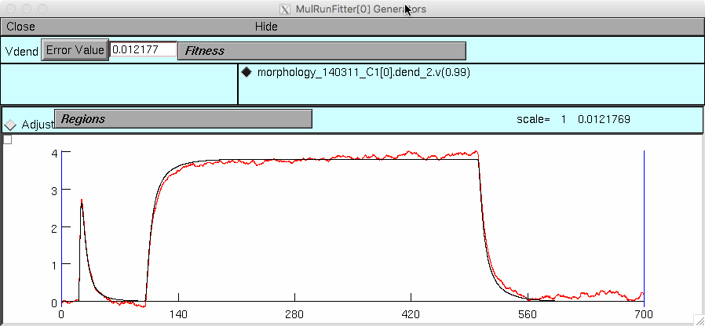

The subfolders contain the model files used in the following paper: Szoboszlay, Lorincz, Lanore, Vervaeke, Silver & Nusser: Functional Properties of Dendritic Gap Junctions in Cerebellar Golgi Cells 2016, Neuron 90, 1-14 This model requires NEURON which is available for free from http://www.neuron.yale.edu The model can be autolaunched from modeldb if NEURON is installed and the browser is properly configured. One of the gapCond.mod files need to be compiled for your platform (see https://senselab.med.yale.edu/ModelDB/NEURON_DwnldGuide.html). Then you can start mosinit.hoc or to select a simulation. See below for more information. The "01_Soma-dendritic_recordings" folder contains the models which used to estimate the specific axial resistivity (Ra) of cerebellar Golgi cells (GoCs). Two sets of experiments are modeled, the only difference between the two is the application of gap junction (GJ) blocker mefloquine. These simulations are in the "02_Mefloquine" folder, whereas the others are in the "01_Control" folder. Figure 5 of the original paper shows the results of the mefloquine simulations, which can be initiated by running "init_fitting.hoc" file. Please note that all the simulations contain the original experimental data: - "Isoma" is the somatic membrane potential (evoked by somatic current injections) - "Vdend" is the dendritic membrane potential at the given dendritic compartment (evoked by the same somatic current injections). The "01_Control" folder is essentially the same, the models can be initiated as mentioned above. In case of 140311-C1, the simulation of 2 syncytia is from Figure S2. num3 is the syncytium with the lowest Ra estimate, whereas num10 is the one with the highest. To recreate the lower set of traces in figure S2A compile the modfiles (see https://senselab.med.yale.edu/ModelDB/NEURON_DwnldGuide.html) in the folder Golgi/01_Soma-dendritic_recordings/01 Control/140311-C1/syncytium/num10 and then start init_fitting.hoc in this folder. After you click on the "Error Value" button in the mutliple run fitter you should see:  "02_Somatic_paired_recordings" contain the simulation files used in Figure 6, where we determined gap junctional conductance (Ggj). Each of these simulations can be initiated - after compiling them - by running "init_auto_fitting.hoc". The files "Passive_GoC_membrane_kinetics_#.hoc" are all generated by neuroConstruct (Gleeson, Steuber, Silver (2007). neuroConstruct: a tool for modelling networks of neurons in 3D space. Neuron 54, 219-235). These files contain the randomly generated GJ locations used in the paper, the different scenarios can be run directly by changing the actual number at the end of the filename in the "init.hoc" file. These simulation also contain experimental data, the "generator" starting with "I" is always the one receiving the current injection, whereas the one starting with "Att" is the one containing the attenuated membrane response of the coupled GoC. Any further questions related to the model should be addressed to: Miklos Szoboszlay (szoboszlay.miklos@koki.mta.hu), R. Angus Silver (a.silver@ucl.ac.uk) or Zoltan Nusser (nusser@koki.hu)